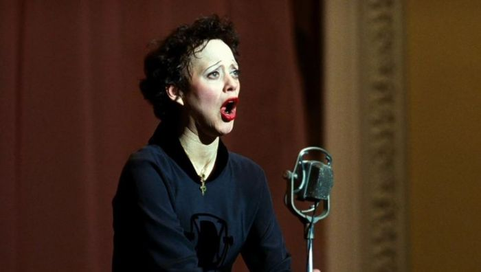
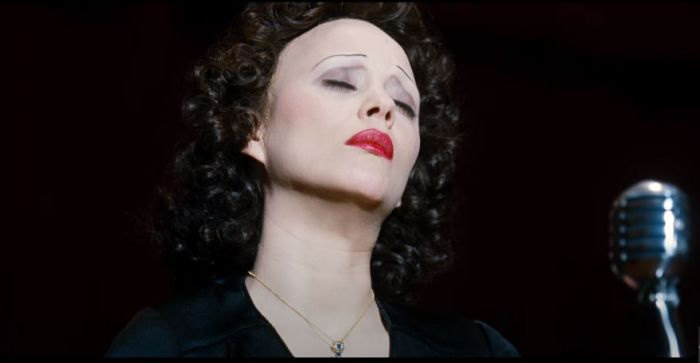

Sabet Oscar, Film La Vie En Rose Hadir di My French Film Festival 2021
By Yuni Usmanda / 27 Januari 2021
My French Film Festival digelar daring mulai 15 Januari 2021 melalui layanan streaming Klik Film. Festival Film Prancis ini menghadirkan 100 pilihan judul film yang bisa ditonton hingga 15 Februari 2021. Berbagai film Box Office maupun pemenang penghargaan bisa kalian tonton. Selain film La Lion, My French Film Festival 2021, juga menghadirkan film peraih dua penghargaan Oscar berjudul La Vie En Rose.
Film La Vie En Rose yang disutradarai oleh Olivier Dahan. Film ini banyak memenangkan penghargaan bergengsi di dunia film internasional. Puncaknya, film drama musikal ini mengantarkan Marion Cotillard menjadi aktris Prancis pertama yang meraih Oscar “Pemeran Utama Wanita Terbaik”. Film ini juga diganjar Oscar untuk “Tata Rias Wajah Terbaik”.

Film ini diangkat berdasarkan kisah nyata seorang legenda musik Prancis bernama Edith Plaf. Sinopsis La Vie En Rose menceritakan bagaimana pahit dan manisnya perjalanan Edith Plaf hingga namanya sukses sampai dunia internasional. Sutradara menuturkan kisah dengan alur yang tidak linear. Ketika kita disuguhi adegan masa kecil dari Edith Piaf, tiba-tiba adegan beralih ke masa sukses Edith Piaf. Lalu, layar menghadirkan Edith Piaf dengan penyakitnya. Sebuah pendekatan yang sering dipakai di film tentang para pesohor, untuk menjaga penonton tidak bosan, sehingga lebih enak dinikmati.

Kekuatan film La Vie En Rose ini terletak pada akting dari Marion Cotillard. Kualitas aktingnya mengingatkan kita pada bagusnya Roberto Benigni di Life Is Beautiful (1997). Tak heran jika Marion Cotillard bisa berakting dengan prima, soalnya sutradara Olivier Dahan ketika menulis naskah sudah membayangkan Marion Cotillard sebagai pemeran Edith Piaf.
Peran make up juga besar sekali dalam menghidupkan karakter Edith Piaf tua. Cotillard harus dirias selama lima jam. Dia juga harus merelakan alisnya dicukur. Simak trailernya di bawah ini.
Film La Vie En Rose yang hadir di ajang My French Film Festival 2021. Kalian dapat disaksikan melalui kanal platform digital Klik Film, hanya dengan Rp10.000 per minggu, bisa menikmati lebih dari 100 film. Penasaran dengan film peraih Oscar ini? Langsung saja nonton filmnya!
Tetap Update Bersama Kami!
Subscribe Newslater NontonYuk! dan kamu akan mendapatkan
Info Film Paling Up to Date
Berita Terbaru Selebritis Favoritmu
Berkesempatan mendapatkan Give Away Tiket Film setiap bulannya!